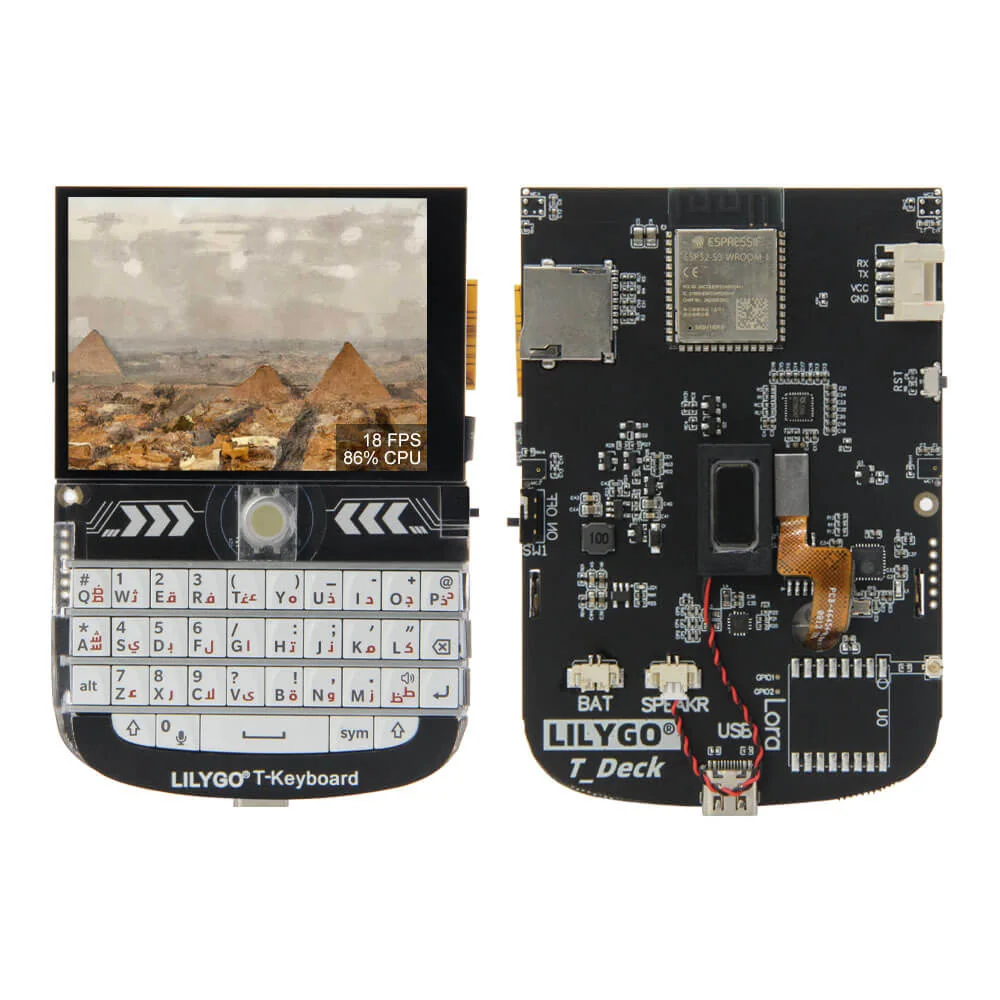

T-Deck
LilyGO · LilyGO T-Deck – ESP32-S3 2.8" pocket device with keyboard, trackball, optional LoRa
T-Deck is a 2.8" 320x240 IPS ESP32 display board by LilyGO based on the ESP32-S3 with 16MB flash, 8MB PSRAM.
Features, ports & interfaces
- SPI display
- 8 MB PSRAM
- 16 MB flash
- Wi-Fi 4 (802.11 b/g/n, 2.4 GHz) – version from the ESP32-S3 datasheet
- Bluetooth 5 (LE) – version from the ESP32-S3 datasheet
- LoRa: SX1262 (optional), +22 dBm, 433/868/915 MHz
- Speaker
- Microphone
- Keyboard: Mini keyboard + trackball
Specifications
| Parameter | Value | Source |
|---|---|---|
| Screen size | 2.8" | source |
| Resolution | 320x240 | source |
| Panel | IPS | source |
| Shape | Rectangular | |
| Display interface | SPI | source |
| Display driver | ST7789 | source |
| MCU / SoC | ESP32-S3FN16R8 (dual-core LX7) | source |
| MCU family | ESP32-S3 | source |
| Flash | 16MB | source |
| PSRAM | 8MB | source |
| Wi-Fi | 2.4 GHz Wi-Fi | source |
| Bluetooth | Bluetooth 5 (LE) | source |
| Category | LilyGO (T-series) | |
| Keyboard | Mini keyboard + trackball | source |
| LoRa | SX1262 (optional), +22 dBm, 433/868/915 MHz | source |
| Microphone | Microphone | source |
| Speaker interface | Speaker | source |
| Vendor | LilyGO |